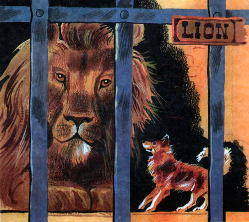
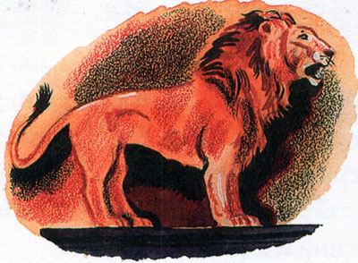

1 / 3

Caption Text
2 / 3

Caption Two
3 / 3

Caption Three
В Лондоне показывали диких зверей и за смотренье брали деньгами или собаками и кошками на корм диким зверям. Одному человеку захотелось поглядеть зверей: он ухватил на улице собачонку и принёс её в зверинец. Его пустили смотреть, а собачонку взяли и бросили в клетку ко льву на съеденье. Собачка поджала хвост и прижалась в угол клетки. Лев подошёл к ней и понюхал её. Собачка легла на спину, подняла лапки и стала махать хвостиком. Лев тронул её лапой и перевернул. Собачка вскочила и стала перед львом на задние лапки. Лев смотрел на собачку, поворачивал голову со стороны на сторону и не трогал её. Когда хозяин бросил льву мяса, лев оторвал кусок и оставил собачке. Вечером, когда лев лёг спать, собачка легла подле него и положила свою голову ему на лапу. С тех пор собачка жила в одной клетке со львом, лев не трогал её, ел корм, спал с ней вместе, а иногда играл с ней. Лев и собачка - картинка 1 Один раз барин пришёл в зверинец и узнал свою собачку; он сказал, что собачка его собственная, и попросил хозяина зверинца отдать ему. Хозяин хотел отдать, но, как только стали звать собачку, чтобы взять её из клетки, лев ощетинился и зарычал. Так прожили лев и собачка целый год в одной клетке. Через год собачка заболела и издохла. Лев перестал есть, а всё нюхал, лизал собачку и трогал её лапой. Когда он понял, что она умерла, он вдруг вспрыгнул, ощетинился, стал хлестать себя хвостом по бокам, бросился на стену клетки и стал грызть засовы и пол. Целый день он бился, метался в клетке и ревел, потом лёг подле мёртвой собачки и затих. Хозяин хотел унести мёртвую собачку, но лев никого не подпускал к ней. Хозяин думал, что лев забудет своё горе, если ему дать другую собачку, и пустил к нему в клетку живую собачку; но лев тотчас разорвал её на куски. Потом он обнял своими лапами мёртвую собачку и так лежал пять дней. На шестой день лев умер.